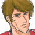
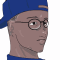

シャワー室のイヴリン。曇った鏡をこすって自分の顔を見る。
 イヴリン 「・・・ふう」
イヴリン 「・・・ふう」
 ケネス（回想） 「背中は任せたぜ。ヘマするなよ」
ケネス（回想） 「背中は任せたぜ。ヘマするなよ」
ナレーション 「体制勢力、議会・セグメント連合と、反体制勢力、エクレシアの戦いは、膠着状態に入っていた。それは、その陰に潜むユニオンの仕組んだ戦争に他ならない。アベルは、ユニオンに利用されていた真実を知り、ユニオンと戦う決意をする」
「そして、アベルの前に立ちはだかったイヴリンは、ケネスの行動が、個人的な復讐によるものだと告げたのだった・・・」
タイトル
|
− A ever bitter orange − |
食堂。
 ケネス 「ぃょぅ。久し振りだな、アベル。ちったぁ背も伸びたか」
ケネス 「ぃょぅ。久し振りだな、アベル。ちったぁ背も伸びたか」
 アベル 「あ、はい。あの・・・っ」
アベル 「あ、はい。あの・・・っ」
ケネス 「なんだ？ あんまし再会を喜んでる顔じゃねーな。青少年にありがちな悩みなら、俺よりボッシュに相談しな。間違ってもハインツやジーンにゃ頼るんじゃねーぞ」
アベル 「そんなんじゃないですよっ。あの・・・っ、イヴリンさんと会いました」
ケネス 「お。相変わらずプリプリしてんだ」
アベル 「その時・・・、イヴリンさん、ケネスさんがアンセスターにいるのは、その・・・、復讐だって・・・」
ケネス 「ん。・・・ああ。間違っちゃねえな。俺は個人的な怨みでユニオンを潰したいと思ってる」
アベル 「え・・・あの、その・・・」
ケネス 「聞きたいなら聞かせてやるよ。別に隠すほどの事じゃーな」
アベル 「じゃあ・・・、聞いても、いいですか？」
ケネス 「ふン。まあ、昔ッから俺がモテモテだったって所から話は始まるンだがな」
アベル 「・・・何ですか、それ」
ケネス 「昔話だよ」
数年前。
ブリーフィング・ルーム。
 ＡＪ 「チームに移動はない。ケネス・イヴリン組、バーナバス・パーチ組、オルダス・アッシュ組のままだ」
ＡＪ 「チームに移動はない。ケネス・イヴリン組、バーナバス・パーチ組、オルダス・アッシュ組のままだ」
ＡＪ 「繰り返すが、今回の作戦はビーム兵器の軍機トライアルに当たる。各自、モニタリングは忘れないように。なお、撃墜数はチームの成績と賞金に換算される。いいな。・・・以上だ」
 バーナバス 「ヘイ、ケネス！ 今度こそァ、譲らねえぜ」
バーナバス 「ヘイ、ケネス！ 今度こそァ、譲らねえぜ」

オルダス 「おいおい、バーナバス。俺達もいるんってコト、忘れてるだろ？ なァ、ケネス」
ケネス 「どっちも言ってろよ」
イヴリン 「ねーえ。あたしらのコンビは最強なんだから」
バーナバス 「イヴリンよぅ。俺ァ、サイファーの性能とケネスの腕は認めてるが、お前サンのコトは視野に入れてねェんだ。その乳ならともかくな」
イヴリン 「うるッさいわね、このハゲ」
バーナバス 「俺はハゲじゃなくて・・・」
ケネス 「モノは結果の２文字で充分だろ。行くぜ」
イヴリン 「あっ、ケネス。待ってよ！」
バーナバス 「俺ァハゲじゃねーぞ！」
自動の渡り廊下。シャッターが閉まる寸前に飛び込んでくるイヴリン。
イヴリン 「ケネスってば！」
ケネス 「いちいち大声で呼ぶなって・・・」
先客のシャイロンが話しかけてくる。
 シャイロン 「おやおや。成績トップの余裕かな。ケネス・ハント」
シャイロン 「おやおや。成績トップの余裕かな。ケネス・ハント」
イヴリン（小声で） 「・・・誰？」
ケネス 「相変わらずだな。アレは事故だったって言ってるだろ。上〜官どの」
シャイロン 「勘違いするな。私はその事故とやらで片目を失い、最新鋭機に乗る資格を失った。隻眼ではＧの性能に耐えられない、とＤｒ．ケーラーから診断を受けてね」
ケネス 「そいつァ、ご愁傷様」
シャイロン 「私は欠陥品の烙印を押された訳だ。・・・が、捨てたものじゃない。カーロ長官から、私のタクティクスは高く評価され、パイロットではなく指揮官として拾われた。結果から言えば貴様に感謝しているぐらいだ」
ケネス 「そりゃ、ありがたいね」
シャイロン 「ただ、私の片目を奪った事を帳消しにしてやるほど優しくはないのでな。まだ貴様にパイロットとしての価値がある以上、利用させて貰うが・・・」
ケネス 「はは。・・・上昇思考と誇大妄想をごっちゃにしないようにな」
シャイロン 「ふン」
イヴリン 「・・・感じ悪ぅ」
アベル 「恋人・・・だったんですか？」
ケネス 「残念な事に、俺は一度もイヴリンと寝たことがなくってな。ま、あのおっぱいは魅力的だったけども」
アベル 「ねっ、寝・・・っ」
ケネス 「ま。多少、不出来ではあったけど、それでもイヴリンは俺のパートナーだった」
ドック。サイファーとヴォーテックスのコックピット。
イヴリン 「ねえ、何をニヤニヤしてるのよ」
ケネス 「マイ・ハニーからの手紙をね」
イヴリン 「・・・そう」
イヴリン （命の遣り取りをしてきた、最高のパートナーだった。あたしが背中を預けて、ケネスも背中を預けてくれる・・・。最高のパートナー）
イヴリン （だけど）
イヴリン （恋人じゃなかった）
ケネス 「よう、イヴリン。次の休暇、俺の手料理食いに来ねえ？」
イヴリン 「手料理ィ？ ・・・レションよりマシなんでしょうね？」
ケネス 「三つ星シェフ並だぜ？」
フィランヌの家。
 フィランヌ 「いらっしゃい、イヴリンさん」
フィランヌ 「いらっしゃい、イヴリンさん」
イヴリン 「あ・・・、はじめまして」
ケネス 「紹介するよ、フィランヌ。こっちがイヴリン、仕事先のパートナーだ」
フィランヌ 「ケネスをよろしくね」
イヴリン 「・・・え、ええ。・・・こちらこそ」
イヴリン （・・・許せなかった。どうしても）
イヴリン （戦場という極限状態で命を預けるパートナー・・・。その価値が、塵に等しいことを思い知らされた）
ケネス 「焼けたぜ。俺の自慢のワイルド・ターキーだ。ソースはフィランヌお手製だ。遠慮なく食ってくれ」
フィランヌ 「赤ワイン・ソースとオレンジ・ソースを作ったの。お口に合うといいけど」
イヴリン 「ありがとう。オレンジ・ソースをいただくわ」
ケネス 「オレンジのおいしさが、俺にはわからん。・・・苦いんだよ」
フィランヌ 「だからちょうど良いのに」
イヴリン （甘いはずのオレンジが、ケネスの言うとおり、ずっと、ずっと、苦く感じた）
アベル 「ケネスさんは・・・、その時、ユニオンの存在を知ってたんですか」
ケネス 「知らなかったと言えば、嘘になる。俺はもともと、金を貰って人殺しをする傭兵だからな」
アベル 「・・・傭兵」
ケネス 「生まれが悪くてな。内乱の激しいセツルメントに生まれた。別に自分の行いを正当化するつもりはないが、生きてくために、マシンをかっぱらって動かす事ぐらい覚えもする。その腕が認められて、グレイゾンにスカウトされた」
ケネス 「それでも、グレイゾンのやり方は目に余った・・・」
ケネス 「家族がいなかった事もあるが、傭兵としてやってくからにゃ、俺自身の素性は隠してたし、問う者もいなかった。ごく一部を除いては、フィランヌのことを知ってる人間もいなかった」
私室。
イヴリン 「抜けるって・・・何を！？」
ケネス 「グレイゾンをさ。この間の作戦で吐き気がした」
イヴリン 「抜けるなんて・・・そんな。Ｇは最高機密の・・・っ」
ケネス 「俺ァ､金で人殺しをする傭兵だ。だけどそれでも、一方的な虐殺がしたい訳じゃない。・・・この間のアレは何だ？ 胸糞悪ィ。金を貰っても、あんな事はしたくない」
イヴリン 「・・・でも、どうして今更？」
ケネス 「・・・ガキが出来たらしい」
イヴリン 「ッ！？」
ケネス 「生まれてくるガキのために、せめて今更でも、人殺しはしたくない。傭兵を続けるとしてもな」
イヴリン 「本気・・・なの？」
ケネス 「幸いな事に、知り合いが海賊を始めたんだ。こっちもロクな仕事じゃないが、人殺しよりはマシだ」
イヴリン 「・・・そう」
ケネス 「お前も、来るか？」
イヴリン （あの女さえいなければ、その選択もあったでしょうね）
ケネス 「・・・ま。無理にとは言わない。強制はしないが、脱走が無事に終わるまで、黙っててくれると助かる」
イヴリン 「・・・ケネス」
ケネス 「ん？」
イヴリン 「逃げるなら、最速のマシンが必要じゃない？ ・・・ヴォーテックスのパスコードは、Ｈ・Ｕ・Ｎ・Ｔ・Ｅ・Ｒよ」
ケネス 「・・・さんきゅ」
イヴリン （そして、脱走の時は不意に訪れた）

アイキャッチ「Ｇ−ＧＵＩＬＴＹ」
けたたましくなるサイレン。
ヴォーテックスのコックピットに、ジーンとケネス。
 ジーン 「このクソ馬鹿ッ！ ヴォーテックスのパイロット・セキュリティコードが変わってるじゃねえか」
ジーン 「このクソ馬鹿ッ！ ヴォーテックスのパイロット・セキュリティコードが変わってるじゃねえか」
ケネス 「知るかよっ！ 変えたのは俺じゃねえッ！ イヴリンに言えッ！」
ジーン 「早くサイファーに移れッ」
ケネス 「わかってるって！」
ケネス、サイファーに飛び乗る。
バスルームから出たイヴリン。
イヴリン （あたしは、こうなる事を予測して、パスコードを書き換えていた。ケネスの脱走が失敗することを願って）
数分前。
ケネス 「パスコードは、”ＨＵＮＴＥＲ”だ」
ジーン 「”ＨＵＮＴＥＲ”ね」
イヴリン （・・・そして、見事にサイレンは鳴らされた）
サイファーのコックピットに２人で入ろうとするケネスとジーン。当然、入れない。
ケネス 「無理ッ！ お前無理ッ！ サイファーのコックピットにお前みたいなマッチョが入るわけネエだろ！」
ドックへと兵士が雪崩れ込んでくる。
ジーン 「き、来やがった！」
ケネス 「ジーン、悪く思うなよ！」
ケネス 「ちなみに、ジーンは最初からスパイとして潜り込んでた。俺に脱走を促して、ボッシュとの橋渡しになったのもジーンだ」
ケネス、屈んだままのサイファーの身体を揺すってジーンを振り落とす。
ジーン 「お・・・・！？ おわー！？」
落ちるジーン。
ジーン 「うごっ、殺す気かってぇの！？」
銃を持って駆け寄ってくる兵士。
ジーン 「く、くそッ！ だ、脱走だ！ ケネスの奴が脱走するッ！」
ジーン、雪崩れ込んできた兵士を煽って、脱走を断念する。
ジーン 「急げ！ サイファーで逃げるぞ！ ・・・悪く思うなよ」
ケネス 「はン・・・。変わり身の早いこと。悪いけど、助けてる余裕ねーわ。・・・達者でな。いつか迎えに来られるかもな」
私室、モニターでドックの様子を見るシャイロン。
シャイロン 「あの馬鹿が脱走だと？ くっくっ、面白い」
司令室。襟のボタンをはめながら走ってくるＡＪ。
ＡＪ 「逃がすな！ 何としても捕らえるんだ！ 出せるマシンは！？」
 兵士 「ヴォーテックスと、クロスボウ、あとはプロトＧが２機です」
兵士 「ヴォーテックスと、クロスボウ、あとはプロトＧが２機です」
ＡＪ 「クロスボウの足じゃ話にならん！ スレッジは！？」
兵士 「現在、解体しての整備中でして・・・」
ＡＪ 「ちいっ! イヴリンとアッシュ、オルダスを追撃させろ！ プロトＧにブースターは着いてるな！？」
兵士 「い、一機だけです」
ＡＪ 「ならオルダスだ！」
ドック。
バーナバス 「ちッ、こんな時に出られないなんてな」
イヴリン 「どいて、出るわ」
バーナバス 「はっはあ、男に逃げられたな、イヴリン」
イヴリン 「黙っててよ、ハゲ」
バーナバス 「ッ！ だから俺はッ！」
オルダス 「悪いな、バーナバス。俺も行かせてもらうぜ」
バーナバス 「へっ、マシンがないんじゃ譲るしかねえな。その代わり、ドジんなよ」
イヴリン 「ヴォーテックス、出ます！」
オルダス 「はぁん。さすがに最速機か。オルダス、プロトＧ、出すぞ！」
宇宙空間。後方から放たれる光が２つ。
ケネス 「おいでなすったか・・・。とりあえず、接触までは直進だな」
直進するサイファーに、ビームが襲いかかる。近付いてきたのはヴォーテックス。
イヴリン 「悪いけど、行かせないわ」
ケネス 「よう、このまま愛の逃避行する？」
イヴリン 「地獄へ？」
ケネス 「悪いけど、心中するつもりはねぇんだわ」
イヴリン 「気が合うわね。あたしもよ」
ケネス 「背中を任せた女に撃たれるってのは・・・あんまり気分のいいモンじゃーねーな」
ケネス、応戦。イヴリンもヴォーテックスを変形させて近距離戦。
イヴリン 「・・・戻ったって、殺されるだけなら、あたしが！」
ケネス 「思い詰めるなよ。だから脇が甘い」
サイファー、ヴォーテックスのブースターを各所破壊する。
イヴリン 「ッ！！ ブースター！？ 馬鹿にして！！」
ケネス 「馬鹿にしてるつもりはないンだけどね」
動けなくなったヴォーテックスに代わり、オルダスのプロトＧが追いつく。
オルダス 「追いつくか！？」
ケネス 「またかよっ」
オルダス 「降伏して反逆罪か、撃墜されて死ぬかを選べ」
ケネス 「どっちも同じじゃねーか」
オルダス 「降伏してくれたら、俺が楽なンだよ」
ケネス 「イヤ〜ねぇ、もう。歳取ると楽ばっかり覚えちゃって」
オルダス 「生き続けてりゃ、お前にもわかるかもな」
ケネス 「悪い。俺、昔ッから楽すンのが大好きでさ」
オルダス 「ＪＡＣだと！？」
ケネス 「ちょっと前にね、配置しといたの」
オルダス 「ぐあああぁぁぁ！」
ケネス 「悪いけど、トンズラさせてもらうぜ」
シャイロン 「逃げ切ったか・・・。くく、よもやこんな形になろうとはな。・・・ケネス、次に会う時が楽しみだ」
アベル 「それで、アンセスターに？」
ケネス 「ま。そんなトコだ」
アベル 「それで、・・・その、何が復讐なんです？」
ケネス 「俺ァ正直、グレイゾンのやり口が嫌いだったが、そんな世界とは無縁で暮らしていくつもりだった。・・・フィランヌと、ガキんちょの３人でな」
長官室。
ＡＪ 「・・・ケネス・ハントの行方を知ってる？」
イヴリン 「一度だけ、彼のプライベートに同行したことがあります」
ＡＪ 「イヴリン、君の情報提供に感謝するよ」
過去のイヴリンから、現在のイヴリンへスライド。
イヴリン （戻れないのなら、進むしかないじゃない）
ケネス 「フィランヌへの連絡が遅れた。・・・まぁ、俺の素性を知ってる人間なんてほとんどいないからな。・・・油断してた」
アベル 「・・・それって・・・！」
ケネス 「死んでたよ。腹ン中の子供ごとな」
アベル 「・・・なん・・・あ・・・」
ケネス 「どうにもね、俺の居場所を吐かせるために、拷問までされてたみたいでさ。幸いと、俺は直接、フィランヌの死体を見ずに済んだけどな。・・・ご丁寧に、コレその拷問写真」

アベル 「・・・うぶッ・・・」
ケネス 「・・・ま、モテる男にゃ、陰が似合うって話だ。・・・苦労が多いと白髪も増えるし、色々大変なんだぜ、モテるのも」
マトリックスのブリッヂ。
 ボッシュ 「さァて、Ｂ．ａ．ｄカンパニーの後ろ盾をなくし、連中の包囲網が狭まる中、俺達に明日は来るのか・・・」
ボッシュ 「さァて、Ｂ．ａ．ｄカンパニーの後ろ盾をなくし、連中の包囲網が狭まる中、俺達に明日は来るのか・・・」

クルー 「来ますよ」
ボッシュ 「ん？ 焼けに強気だな」
クルー 「これ、どうぞ」
ボッシュ 「ん。・・・は。・・・はは。ついに、来たか」
クルー 「とりあえず、明日は見えましたね」
イヴリンの私室。ソファに寝転ぶイヴリン。
テーブルの上に置いてあるフルーツ。その中のオレンジを、イヴリンが見つめている。

ナレーション 「幾重にも張り巡らされたイブレイの罠。キャロラインはその足止めを振り切り、アベルたちに追いつく事が出来るのか？ 一方、追われる身のアベルたちを、イブレイが遣わしたカインが、強襲する。次回、『追撃のカイン』 Ｇの鼓動が、今目覚める」